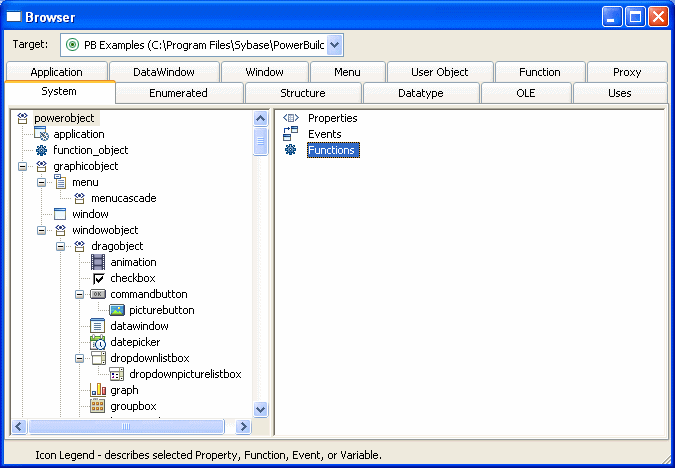
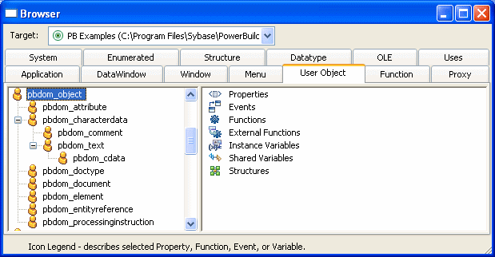

PowerBuilder provides a Browser that can show the hierarchy of the built-in PowerBuilder system objects and the hierarchy of ancestor and descendent windows, menus, and user objects you create. In object-oriented terms, these are called class hierarchies: each PowerBuilder object defines a class.
 Regenerating objects The Browser also provides a convenient way to regenerate objects
and their descendants. For more information, see "Regenerating library entries".
Regenerating objects The Browser also provides a convenient way to regenerate objects
and their descendants. For more information, see "Regenerating library entries".
 To browse the class hierarchy of PowerBuilder
system objects:
To browse the class hierarchy of PowerBuilder
system objects:
Click the Browser button in the PowerBar.
Choose the System tab to show the built-in PowerBuilder objects.
In the left pane, scroll down the object list and select the powerobject.
Display the pop-up menu for the powerobject and choose Show Hierarchy.
Select Expand All from the pop-up menu and scroll to the top.
The hierarchy for the built-in PowerBuilder objects displays.

 Getting context-sensitive Help in the Browser To get context-sensitive Help for an object, control, or function,
select Help from its pop-up menu.
Getting context-sensitive Help in the Browser To get context-sensitive Help for an object, control, or function,
select Help from its pop-up menu.
 To display the class hierarchy for other object
types:
To display the class hierarchy for other object
types:
Choose the Menu, Window, or User Object tab.
If you choose any other object type, there is no inheritance for the object type, so you cannot display a class hierarchy.
In the left pane, select an object and choose Show Hierarchy from its pop-up menu.
Select an object and choose Expand All from its pop-up menu.
PowerBuilder shows the selected object in the current application. Descendent objects are shown indented under their ancestors.
For example, if your application uses the PBDOM PowerBuilder extension object, the pbdom_object displays on the User Object page. You can select Show Hierarchy and Expand All from its pop-up menu to display its descendent objects.
